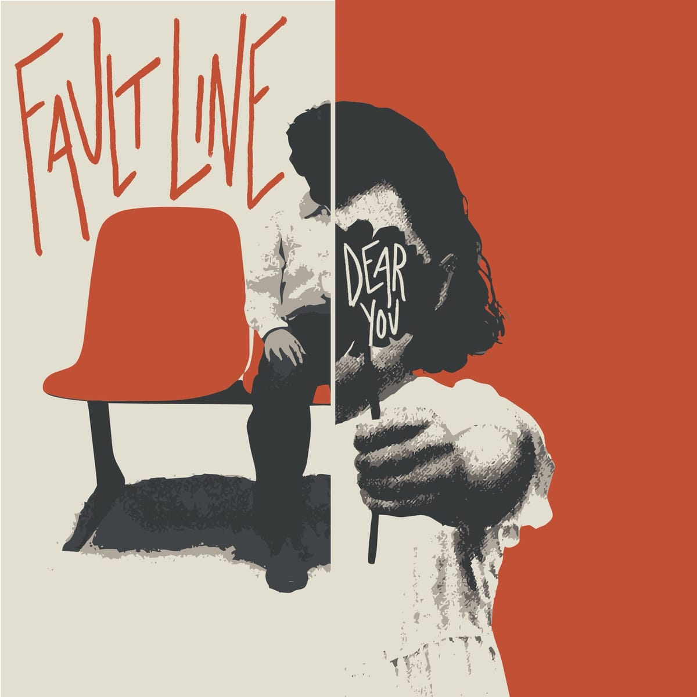

beaumont, texas
we were gone a while.
about
four friends from beaumont, texas. we stopped for ten years. we never stopped thinking about it. this is what came out.
draft · the band will write its own

next.
not yet.it's finished. it's just not time. · draft
don't mind him. he's always been here. · draft
shirts and things you can hold.
shop.dearyoutx.com